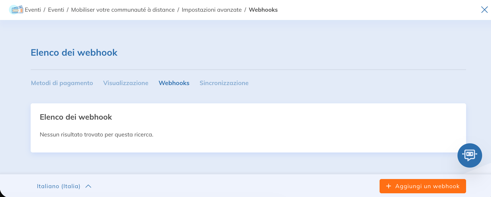
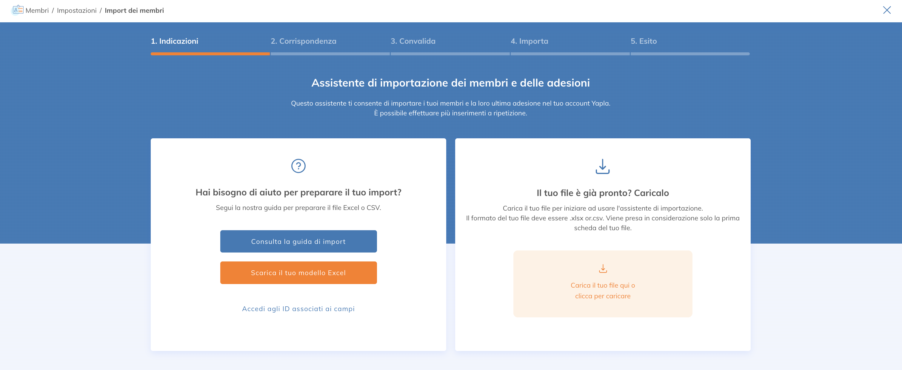

La piattaforma Yapla è aperta e consente di creare comunicazioni automatiche con software esterni tramite Internet. Diverse tecniche permettono di sincronizzare i dati tra i vari sistemi. Ecco la documentazione relativa a queste tecniche di sincronizzazione.
TECNICHE DISPONIBILI
- API - Documentazione API per i membri
- Webhooks - Aggiungere un webhook per sincronizzare gli eventi di un’organizzazione con un software e Yapla
- Zapier - Sincronizza i tuoi membri con Zapier
- Import Excel - Importazione manuale dei dati in Yapla tramite una procedura guidata.
- Export Excel - Esportazione manuale dei dati per reintegrarli in un sistema esterno.
API Yapla
Disponibile a partire dal pacchetto Plus.
La nostra documentazione sull’API Membri è a tua disposizione per aiutarti a sincronizzare i tuoi membri. Ti consigliamo di farti assistere da un esperto di programmazione per riuscirci.
Documentation
openapi: 3.0.0
info:
description:
## Members
You will be able to obtain information about your members (first name, last name,
email, status, member number, groups, etc.) as well as their memberships (start
date, expiration date, membership status, etc.) for a given campaign.
version: 1.0.0-oas3
title: DATA API
contact:
name: API Support
email: support@yapla.com
termsOfService: https://yapla.ca/en/terms-of-use
servers:
- url: https://data.s1.yapla.com/api/1.0
description: "North America server"
- url: https://data.s2.yapla.com/api/1.0
description: "Europe server"
paths:
/campaign/{campaignID}/members:
get:
tags:
- Members
summary: returns members and their memberships for a given campaign
operationId: returnMember
description:
By passing the appropriate options, you can obtain information
about members and their memberships for a given campaign.
### Campaign specifications
To retrieve all members of a campaign, you must indicate the campaign ID.
You can find it in the campaign URL. For an ongoing campaign,
please enter 0.
### Token specifications
The API key will be available in the Yapla account under Configuration / API.
### Pagination specifications
By default, the API is paginated, so don't forget to indicate the page
number as well as the number of results per page.
The total number of results is not indicated, so you must iterate until
you get an empty page. Results are listed from the most recent to the oldest.
If a member is added during the call, they will be added to page 1.
parameters:
- in: path
name: campaignID
description: if the campaign is ongoing, put 0. Otherwise, indicate the campaign ID
required: true
schema:
type: integer
minimum: 0
- in: query
name: token
description: enter the API key of your Yapla account
required: true
schema:
type: string
- in: query
name: page
description: indicate the desired page number
required: true
schema:
type: integer
minimum: 1
- in: query
name: locale
description: response language (fr or en)
schema:
type: string
- in: query
name: per_page
description: set the number of results per page
required: true
schema:
type: integer
minimum: 1
- in: query
name: email
description: filter by a member’s email address
schema:
type: string
responses:
'200':
description: results matching the search criteria
content:
application/json:
schema:
type: array
items:
$ref: '#/components/schemas/MemberResponse'
'400':
description: invalid input parameter
components:
schemas:
MemberResponse:
type: object
properties:
id:
type: string
description: Member ID.
example: natBqZ8Ud5l5sdgAdlkNKVud
numero_de_membre:
type: string
description: Member number.
example: '0004317'
firstname:
type: string
description: Member’s first name.
example: John
lastname:
type: string
description: Member’s last name.
example: Doe
email:
type: string
description: Member’s email address.
example: emailMember@hiscompany.com
member_language:
type: string
description: Member’s language.
example: French
statut:
type: string
description: Member’s status (active/inactive).
example: active
adhesion_name:
type: string
description: Membership type name.
example: VIP membership
adhesion_statut:
type: string
description: Membership status.
example: validate
adhesion_subscription_date:
type: string
description: Subscription date.
example: '2018-01-01'
adhesion_date_debut:
type: string
description: Membership start date.
example: '2018-01-01'
adhesion_date_renouvellement:
type: string
description: Membership renewal date.
example: '2018-12-31'
adhesion_type:
type: string
description: Membership processing type (first membership only/renewal only).
example: Renewal only
adhesion_identifiant:
type: string
description: Membership identifier.
example: ADH-003
Community:
$ref: '#/components/schemas/Community'
content-hash:
type: string
description: Hash code for the current object.
example: -
2c1665e2197c6d0f9e9ec9ac3de9cd7a5f4b8f1f56757015f44a5e77d0ec5638b095f0af68
57c339f06478ac860d5b0c653787027da184fa6b4aca717bd01542
Community:
description: "Corresponds to the groups to which the member belongs. This includes Yapla system groups and custom groups."
properties:
id:
type: string
description: Group ID.
example: '28222'
name:
type: string
description: Group name.
example: Active member
Per maggiori dettagli, consulta i seguenti articoli:
WEBHOOKS
Un webhook è una funzione di callback HTTP, definita da un utente di Yapla, che recupera dati a partire da un evento. Ad esempio, è possibile configurare un webhook in Yapla che effettua una chiamata HTTP verso un sistema esterno ogni volta che una scheda di un membro viene modificata. I webhooks sono disponibili per gli eventi e le donazioni.

Il server chiamato, tramite un URL, riceve una struttura JSON contenente tutte le informazioni associate all’evento. Le chiamate possono essere protette cifrando le comunicazioni con un certificato SSL (HTTPS) proveniente dal server chiamato.
IMPORTAZIONE EXCEL
Per le sincronizzazioni occasionali, offriamo un sistema di importazione manuale che permette di sincronizzare i membri, le organizzazioni e le adesioni.

Questa tecnica è solitamente utilizzata durante la configurazione iniziale della piattaforma.
EXPORT EXCEL
In qualsiasi momento, è possibile esportare l’insieme dei dati dei membri di un account Yapla. È sufficiente utilizzare il pulsante Estrazione dell’interfaccia Gestione membri.
COME RICEVERE DATI DALL’ESTERNO VERSO YAPLA
Il modo migliore per sincronizzare i membri di un sistema esistente con Yapla è adottare il seguente approccio: una prima sincronizzazione manuale che riprende tutti i membri in un momento preciso per importarli in Yapla. Dopo questa prima fase, il sistema esterno deve utilizzare l’API di Yapla per inviare i dati di un membro specifico ad ogni creazione o aggiornamento. In questo modo, Yapla avrà sempre i dati più recenti del sistema esterno.
COME INVIARE DATI DA YAPLA VERSO IL SISTEMA ESTERNO
Il principio è lo stesso:
- il primo passo consiste nell’integrare i membri esistenti nel sistema esterno tramite un’estrazione Excel.
- Dopo questa prima fase, è sufficiente configurare un webhook in Yapla che chiamerà il sistema esterno nei seguenti due eventi: "Creare un membro" e "Modificare un membro".
SINCRONIZZAZIONE BIDIREZIONALE
Non è possibile mantenere Yapla e un sistema esterno sincronizzati in qualsiasi momento. Le funzioni di sincronizzazione di Yapla permettono solo la lettura. Non è disponibile alcun servizio per aggiornare i dati in Yapla tramite un’API.
Per qualsiasi domanda sull’argomento, contatta assistenza@yapla.com.

Commenti
Accedi per aggiungere un commento.